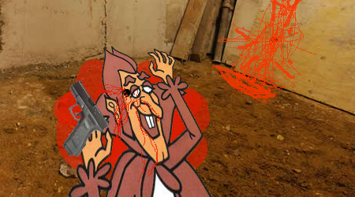

As he pointed the gun towards Doug, his hand shook akin to a leaf. Then,
a tear ran down his cheek. "I was molested as a child!" Count Chocula
then turned the gun on himself, and pulled the trigger.

"extra gum has supringly long-lastign taste capabilities" noted
Doug. Then, from a door adjacent to him fifty nude models emerged. "You
saved the world Doug Beach. How can we ever repay you?" Flabbergasted,
he said "i am certain I can think of ways". 5 years later Doug Beach
opened up a Nail Factory employing the 50 models and to this day still manufactures
some of the worlds finest nails.
Fin.
*********** ADVENTURES OF DOUGH BEARD ***********
tired of stupid idolt comic book with cliche story ands hero save woman and
live happily ever after every episode? i am certainely not! there is new hip
graphic novel for 22nd century that follow old cliche style but use new age
storytell technique! enjory.